Threat intelligence is useful only when it becomes operational.
A report is not enough. A PDF from a vendor, an incident response write-up, a malware analysis note, or a DFIR case study still needs to be translated into practical defensive work:
- What MITRE ATT&CK techniques are actually described?
- Which mappings are supported by real evidence?
- Which known groups or campaigns share similar TTPs?
- Which overlaps are only generic commodity behavior?
- Which techniques become detection gaps?
- How do I move the result into an analyst workflow, ATT&CK Navigator, PDF reporting, or OpenCTI?
That is the problem ThreatMapper was built to solve.
ThreatMapper is an open-source, self-hosted CTI-to-detection workbench. It helps analysts map threat reports to MITRE ATT&CK, review evidence, compare TTP overlap against groups and campaigns, export reports, and hand off structured outputs to detection engineering or CTI platforms.
Version 2.0 adds the features that make it much more useful in real analyst workflows:
- Local LLM support through OpenAI-compatible endpoints
- STIX 2.1 export for OpenCTI
- DFIR Report example indexing
- enriched ATT&CK group and actor pages
- MITRE ATT&CK reference sync
- report-to-analysis-to-comparison demo assets
- full operator documentation
GitHub:
https://github.com/anpa1200/threatmapper
Release v2.0.0:
https://github.com/anpa1200/threatmapper/releases/tag/v2.0.0
Full guide:
https://github.com/anpa1200/threatmapper/blob/main/docs/full-guide-v2.md
Table of Contents
- What ThreatMapper Is
- Architecture
- Installation
- Local LLM Support
- Discover Page
- AI Analysis
- Review Status
- Navigator
- ATT&CK Group Library
- Group And Campaign Comparison
- Compare Modes
- Group vs Group
- DFIR Examples
- Reference Sync
- STIX 2.1 Export For OpenCTI
- PDF Export
- ATT&CK Navigator Export
- API
- Security And Privacy Notes
- What ThreatMapper Is Not
- Recommended Workflow
- Release Evidence
- Links
- Final Thoughts
- Follow My Work
What ThreatMapper Is

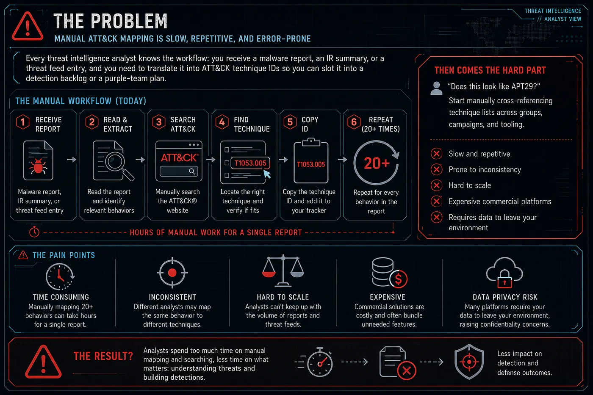
ThreatMapper is not a SIEM.
It is not an EDR.
It is not an attribution engine.
It is a workbench for the middle part of CTI work: the place where an analyst takes narrative reporting and turns it into ATT&CK mappings, evidence, similarity leads, detection gaps, and structured exports.
The core workflow is:
report -> ATT&CK mapping candidates -> analyst review -> group/campaign/report comparison -> detection gaps -> exportsThis matters because most threat intelligence still arrives as prose. Someone has to read it, extract behaviors, map them to ATT&CK, check the evidence, and make the result useful for detection teams.
ThreatMapper helps automate the repetitive parts while keeping analyst review in the loop.
Architecture

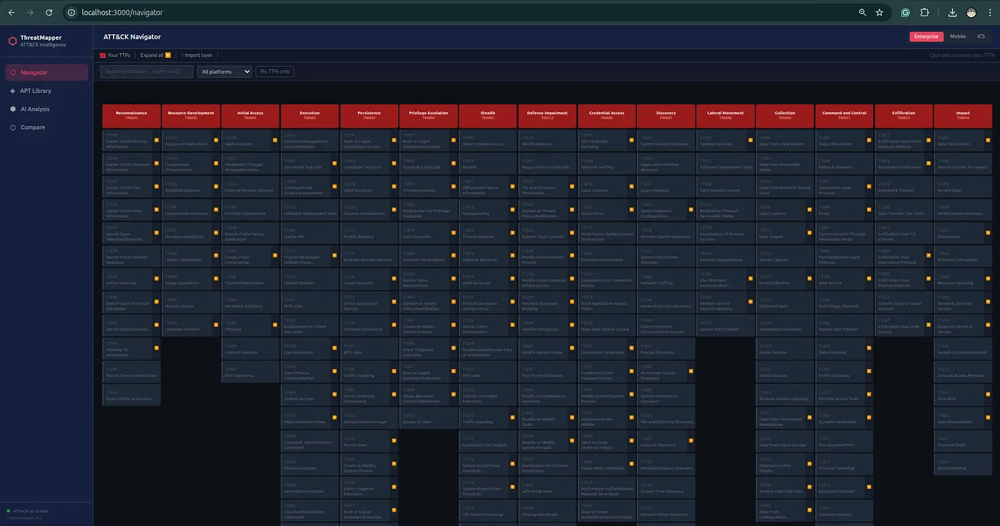

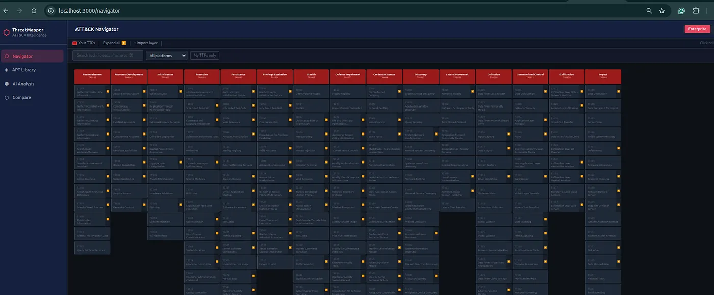

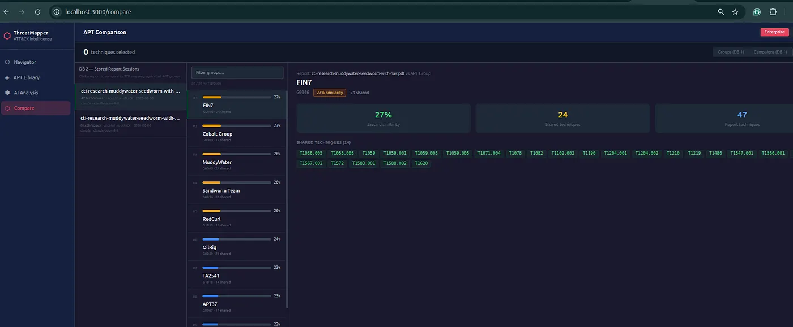
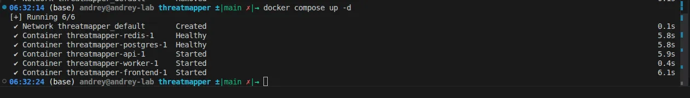
ThreatMapper runs as a self-hosted Docker Compose stack:
- React / Vite frontend
- FastAPI backend
- PostgreSQL for ATT&CK data and analysis history
- Redis and Celery for background jobs
- scheduled MITRE ATT&CK synchronization
- optional embedded reference book
The Docker deployment is the full version. It supports private report analysis, configured LLM providers, local LLM gateways, report storage, API workflows, and exports.
The public browser workspace is for exploration and manual ATT&CK work. Do not upload private reports into public demos.
Installation

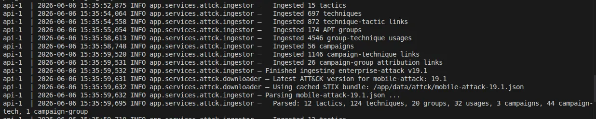

Clone the repository:
git clone https://github.com/anpa1200/threatmapper.git
cd threatmapperCreate the environment file:
cp .env.example .envConfigure at least one AI provider:
ANTHROPIC_API_KEY=
OPENAI_API_KEY=
OPENAI_MODEL=gpt-4.1
GEMINI_API_KEY=Start the stack:
docker compose up -d --buildOpen the UI:
http://localhost:3000Open the API docs:
http://localhost:8000/docsCheck health:
curl http://localhost:8000/api/healthExpected result:
{"status":"ok","version":"2.0.0"}On first startup, ThreatMapper ingests MITRE ATT&CK STIX data into PostgreSQL. This can take a few minutes.
Local LLM Support
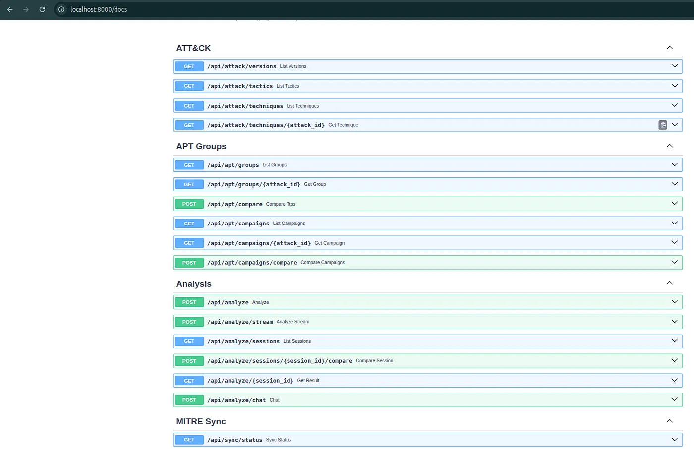
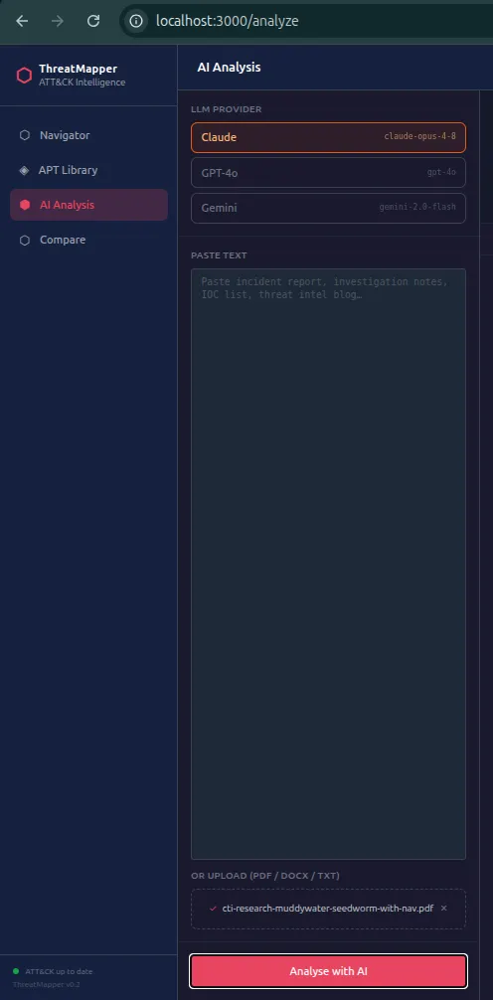
ThreatMapper v2.0 supports local LLMs through OpenAI-compatible APIs.
This is important if you want to analyze sensitive reports without sending them to a public cloud provider.
Supported patterns include:
- Ollama
- LM Studio
- LocalAI
- vLLM
- any OpenAI-compatible internal gateway
Example with Ollama:
ollama pull llama3.1:8b
ollama serveThen configure:
LOCAL_LLM_BASE_URL=http://host.docker.internal:11434/v1
LOCAL_LLM_API_KEY=local
LOCAL_LLM_MODEL=llama3.1:8bIn the UI, select Local as the LLM provider.
Use a capable model. Small models may fail to produce clean JSON or may produce weak ATT&CK mappings.
Discover Page

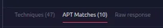
The Discover page is the starting point.
It shows:
- actor count
- technique count
- public report count
- selected TTP count
- coverage state
- most-referenced techniques
- recent public intelligence examples
It also gives quick entry points:
- investigate actor
- analyze report with AI
- compare behavior
- review coverage
This page is for orientation. It helps you decide where to start.
AI Analysis

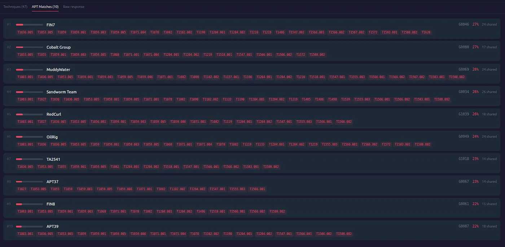


The AI Analysis page accepts:
- pasted text
- DOCX
- TXT
The workflow:
- Select ATT&CK domain: Enterprise, Mobile, or ICS.
- Select provider: Claude, OpenAI, Gemini, or Local.
- Paste text or upload a report.
- Run analysis.
- Watch the streamed response.
- Review extracted techniques.
- Inject reviewed TTPs into Navigator.
- Export PDF or STIX/OpenCTI output.
Each extracted technique includes:
- ATT&CK ID
- technique name
- tactic
- confidence
- evidence
- review status
- evidence source
The evidence field is the most important part.
If the evidence does not show behavior, the mapping should not be accepted.
For example, an actor name in a report does not automatically prove the techniques associated with that actor. A tool name does not automatically prove every technique that tool can perform. ThreatMapper helps generate candidates, but the analyst decides what is defensible.
Review Status
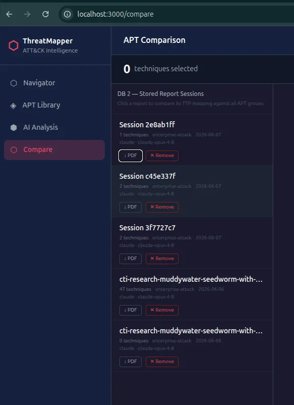
ThreatMapper supports analyst review states:
- suggested
- accepted
- rejected
- needs evidence
This makes the tool more useful than a simple “AI says these are TTPs” output.
You can separate raw model suggestions from reviewed findings.
That distinction matters when the output is sent to another analyst, a SOC team, a detection engineer, or OpenCTI.
Navigator
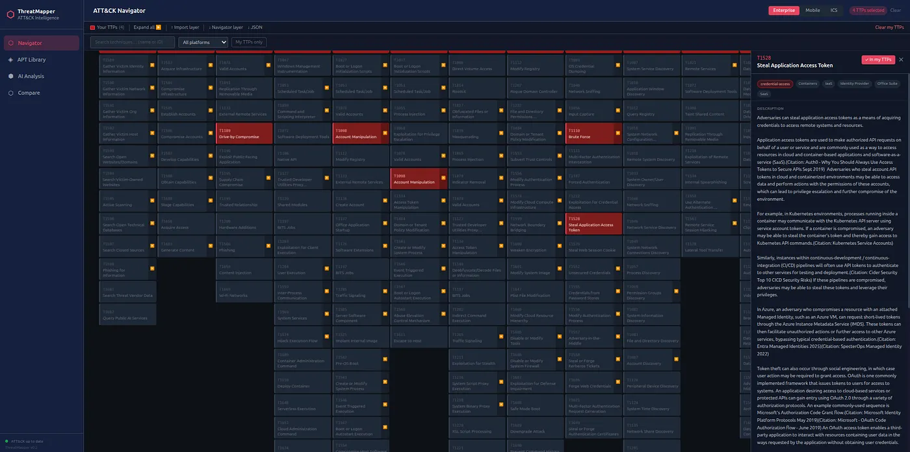

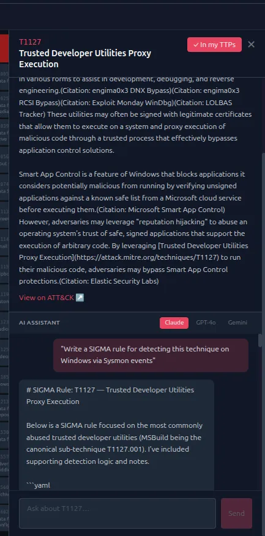
Navigator is the ATT&CK matrix workspace.
You can:
- browse Enterprise, Mobile, and ICS ATT&CK plus MITRE ATLAS
- search techniques
- expand sub-techniques
- filter by platform
- manually select TTPs
- import ATT&CK Navigator layers
- save and load server-side layers
- overlay actor/group techniques
- export layers
- export PDF summaries
After AI Analysis, you can inject extracted techniques into Navigator and continue working manually.
This is important because ATT&CK analysis is rarely finished after one model response. Analysts need to add, remove, correct, compare, and explain.
ATT&CK Group Library

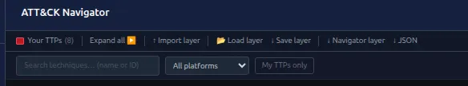
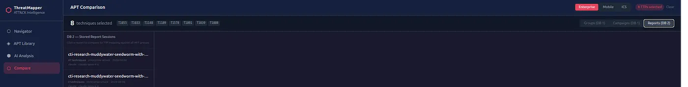
ThreatMapper v2.0 improves the ATT&CK Group Library.
Actor pages now include:
- ATT&CK group ID
- STIX ID
- aliases
- description
- created and modified metadata
- ATT&CK object version
- mapped technique count
- campaign count
- tactic coverage
- observed platform coverage
- technique usage evidence
- external references
- source names
- direct MITRE ATT&CK link
This makes the actor pages more useful for real CTI review.
Instead of only seeing a name and a list of techniques, you can inspect the supporting context and understand where the profile comes from.
Group And Campaign Comparison
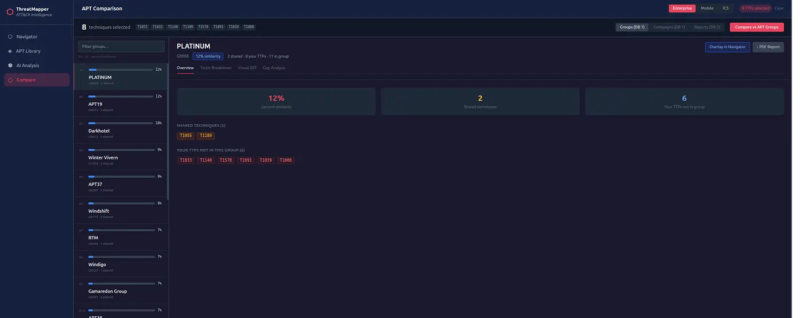
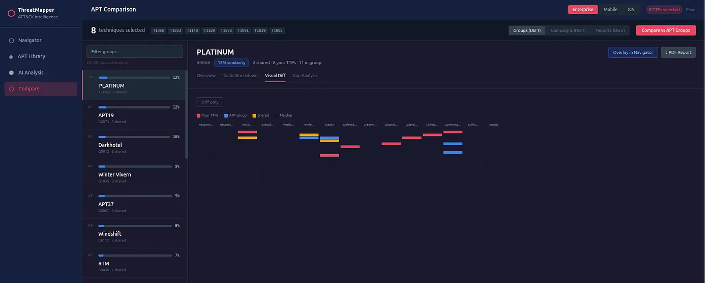

ThreatMapper compares selected TTPs against:
- ATT&CK groups
- ATT&CK campaigns
- previous stored report analyses
The comparison uses Jaccard overlap.
This is useful for investigation, but it is not attribution.
A high overlap means:
this TTP set shares behavior with this profileIt does not mean:
this actor definitely did itThat difference matters.
Attribution needs more evidence: infrastructure, malware, victimology, timing, tooling, procedures, and external intelligence.
ThreatMapper helps you find overlap worth investigating.
Compare Modes
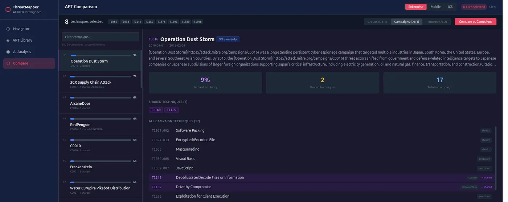
The Compare page has three modes.
Groups
Compare your selected TTPs against ATT&CK group profiles.
Use this for:
- initial lead generation
- actor-profile overlap
- detection-gap planning
Campaigns
Compare against named ATT&CK campaigns.
This can be more specific than group comparison because group profiles often span years of activity, while campaigns represent narrower operations.
Reports
Compare against previous AI analyses stored in the local database.
Use this for:
- cross-report correlation
- incident clustering
- repeated behavior discovery
- retrospective comparison
Group vs Group

The Group vs Group page compares multiple ATT&CK group profiles at once.
It includes:
- overlap matrix
- combined ATT&CK view
- technique table
This is useful when you want to understand which behaviors are shared across actors and which techniques may be more distinctive.
DFIR Examples
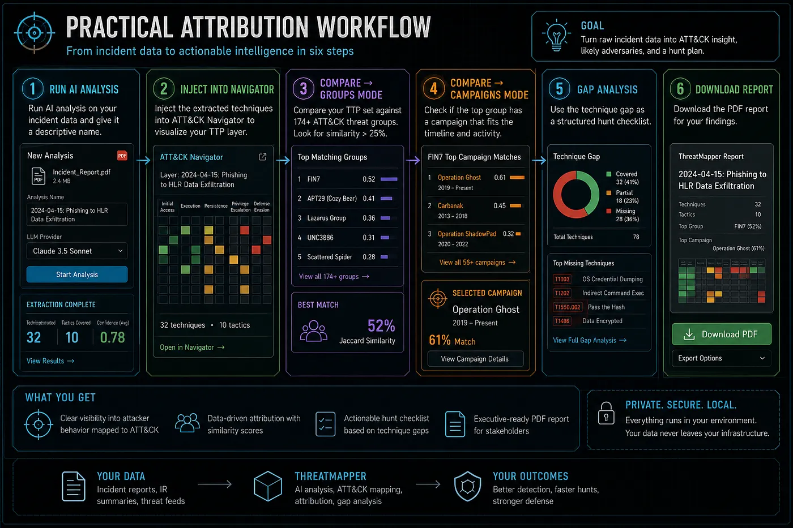
ThreatMapper v2.0 adds DFIR Examples.
The page indexes public DFIR Report metadata:
- title
- source URL
- date
- tags
- ATT&CK techniques
- actor mappings where available
ThreatMapper does not mirror third-party report content. It stores metadata only.
The workflow is:
- Open an indexed DFIR example.
- Go to the original report page.
- Save the source page as a local PDF.
- Upload the PDF to ThreatMapper AI Analysis.
- Extract ATT&CK candidates.
- Review evidence.
- Compare against groups, campaigns, and stored reports.
This gives analysts a practical way to test the workflow with public material while respecting the original source.
Reference Sync

ATT&CK changes over time.
ThreatMapper includes Reference Sync for:
- Enterprise ATT&CK
- Mobile ATT&CK
- ICS ATT&CK
The sync page shows:
- current ingested version
- latest known version
- update state
- configured domains
- manual sync trigger
- force sync option
Scheduled sync runs through Celery Beat.
This matters because a report analyzed today may need to be compared again after ATT&CK changes.
STIX 2.1 Export For OpenCTI
This is one of the most important v2.0 additions.
ThreatMapper can export a completed analysis as a STIX 2.1 bundle:
GET /api/export/analysis/{session_id}/stixThe UI also includes:
↓ STIX/OpenCTIThe bundle contains:
- STIX
report - ATT&CK
attack-patternobjects for extracted techniques - optional
intrusion-setobjects for group-similarity leads x_threatmapper_*metadata
The custom metadata includes:
- provider
- model
- ATT&CK domain
- confidence
- review status
- evidence source
- similarity score
- shared techniques
Important: this is not an IOC export.
ThreatMapper is not mainly about indicators.
It is about reports, TTPs, ATT&CK mapping, evidence review, and detection handoff.
The OpenCTI export reflects that. It moves report and behavior context into a CTI platform without pretending that similarity equals attribution.
PDF Export
ThreatMapper can export a completed AI analysis as a PDF report.
The PDF includes:
- analysis metadata
- provider and model
- ATT&CK domain
- executive summary
- extracted techniques
- evidence
- confidence
- group similarity leads
- tactic coverage
This is useful for analyst handoff, internal review, and detection backlog discussions.
ATT&CK Navigator Export
Navigator layers can be exported in ATT&CK Navigator-compatible JSON format.
This is useful when your team already uses ATT&CK Navigator and wants to continue analysis there.
You can also import existing Navigator layers into ThreatMapper.
API
ThreatMapper exposes API endpoints for integration.
Common endpoints:
GET /api/health
GET /api/attack/versions
GET /api/attack/techniques
GET /api/attack/techniques/{attack_id}
GET /api/apt/groups
GET /api/apt/groups/{group_id}
POST /api/apt/compare
GET /api/apt/campaigns
POST /api/apt/campaigns/compare
POST /api/analyze
POST /api/analyze/stream
GET /api/analyze/sessions
GET /api/analyze/{session_id}
PATCH /api/analyze/sessions/{session_id}/techniques/{attack_id}/review
GET /api/export/analysis/{session_id}
GET /api/export/analysis/{session_id}/stix
POST /api/export/layer
GET /api/sync/status
POST /api/sync/triggerThe API makes it possible to connect ThreatMapper to internal workflows, report pipelines, or CTI tooling.
Security And Privacy Notes
ThreatMapper should be deployed in controlled environments.
For private work:
- self-host the Docker stack
- use a local LLM or an approved provider
- restrict network exposure
- put the app behind authentication
- use TLS
- define report retention
- define raw response retention
- back up PostgreSQL if report history matters
Do not upload confidential reports into public demos.
What ThreatMapper Is Not
ThreatMapper is not:
- an attribution engine
- a SIEM
- an EDR
- a replacement for OpenCTI
- a replacement for MISP
- a replacement for ATT&CK Navigator
- a fully automated detection generator
It is a focused workbench for CTI-to-detection workflows.
Its job is to help analysts move from report text to reviewed ATT&CK evidence and useful handoff artifacts.
Recommended Workflow
The workflow I recommend is:
- Start with a public or authorized report.
- Run AI Analysis.
- Review every extracted mapping.
- Accept only evidence-backed TTPs.
- Inject accepted TTPs into Navigator.
- Compare against groups.
- Compare against campaigns.
- Compare against previous reports.
- Review detection gaps.
- Export PDF for analyst handoff.
- Export STIX/OpenCTI if promoting to a CTI platform.
- Document uncertainty.
The most important rule:
ATT&CK overlap is not attribution.Use similarity as a lead. Use evidence for conclusions.
Release Evidence
ThreatMapper v2.0.0 includes:
- Docker Compose deployment
- FastAPI backend
- React frontend
- PostgreSQL report and ATT&CK storage
- Redis/Celery background workers
- Claude, OpenAI, Gemini, and Local LLM support
- MITRE ATT&CK Enterprise, Mobile, ICS, and MITRE ATLAS support
- enriched ATT&CK actor pages
- DFIR example metadata
- STIX/OpenCTI export
- PDF export
- Navigator JSON export
- backend test suite
- frontend production build
- demo video and GIF
- full guide and release notes
Verification for v2.0.0:
Backend tests: 76 passed
Frontend build: passedLinks
GitHub:
https://github.com/anpa1200/threatmapper
Release:
https://github.com/anpa1200/threatmapper/releases/tag/v2.0.0
Full guide:
https://github.com/anpa1200/threatmapper/blob/main/docs/full-guide-v2.md
Project hub:
https://1200km.com/threatmapper/
Public ATT&CK workspace:
https://1200km.com/threat-matrix/
External validation:
https://1200km.com/external-validation.html
Final Thoughts
The goal of ThreatMapper is simple: make threat intelligence easier to operationalize.
It does not replace analysts. It gives analysts a structured place to work.
Reports become ATT&CK candidates.
Candidates become reviewed mappings.
Mappings become comparison sets.
Comparison sets become detection questions.
And reviewed results can move into PDF, Navigator, JSON, or OpenCTI.
That is the part of CTI work I wanted to improve.
Follow My Work
I publish practical cybersecurity research, CTI workflows, detection engineering notes, malware analysis projects, OpenCTI work, cloud and Kubernetes security research, AI-assisted security tooling, labs, and technical guides.
Portfolio / Knowledge Base: https://1200km.com/
Medium: https://medium.com/@1200km
GitHub: https://github.com/anpa1200
LinkedIn: https://www.linkedin.com/in/andrey-pautov/
Andrey Pautov